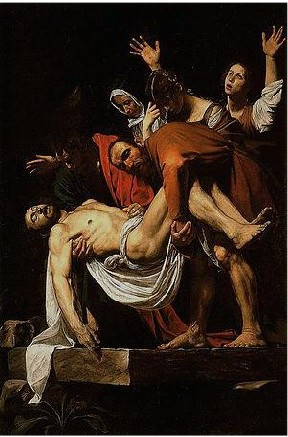

Joseph, a member of the very Council that had unanimously condemned Jesus to death, sought Jesus’ body secretly from Pilate according to John 19:38. Josephus relates that bodies of crucified criminals were taken down and buried before evening of the Sabbath. Criminals were sometimes secretly rescued in this way. Legs were broken to hasten death.

Mt 27:57 When the even was come, there came a rich man of Arimathaea, named Joseph, who also himself was Jesus' disciple: 27:58 He went to Pilate, and begged the body of Jesus. Then Pilate commanded the body to be delivered. 27:59 And when Joseph had taken the body, he wrapped it in a clean linen cloth, 27:60 And laid it in his own new tomb, which he had hewn out in the rock: and he rolled a great stone to the door of the sepulchre, and departed. 27:61 And there was Mary Magdalene, and the other Mary, sitting over against the sepulchre. 27:62 Now the next day, that followed the day of the preparation, the chief priests and Pharisees came together unto Pilate, 27:63 Saying, Sir, we remember that that deceiver said, while he was yet alive, After three days I will rise again. 27:64 Command therefore that the sepulchre be made sure until the third day, lest his disciples come by night, and steal him away, and say unto the people, He is risen from the dead: so the last error shall be worse than the first. 27:65 Pilate said unto them, Ye have a watch: go your way, make it as sure as ye can. 27:66 So they went, and made the sepulchre sure, sealing the stone, and setting a watch.
~~~~~~~